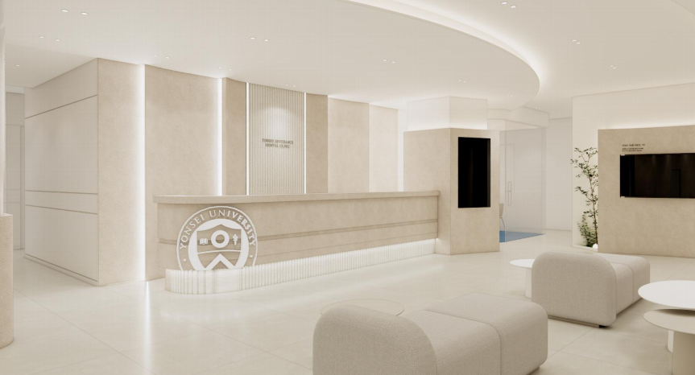
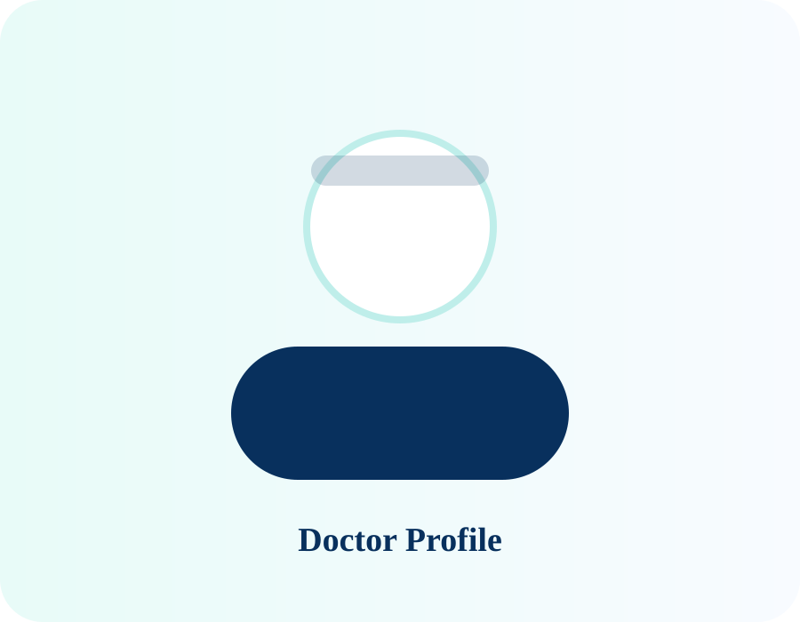
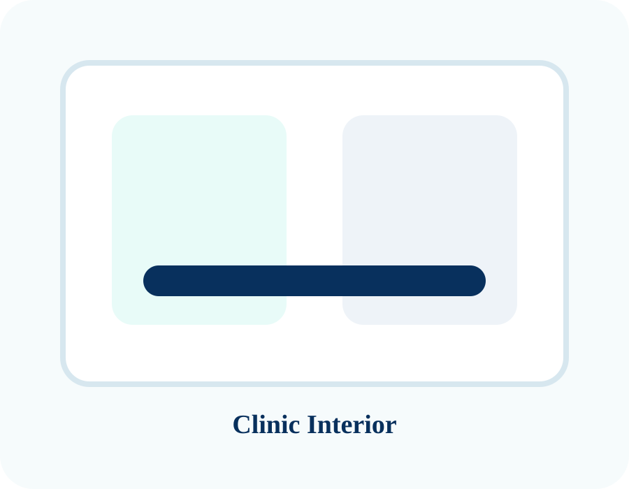
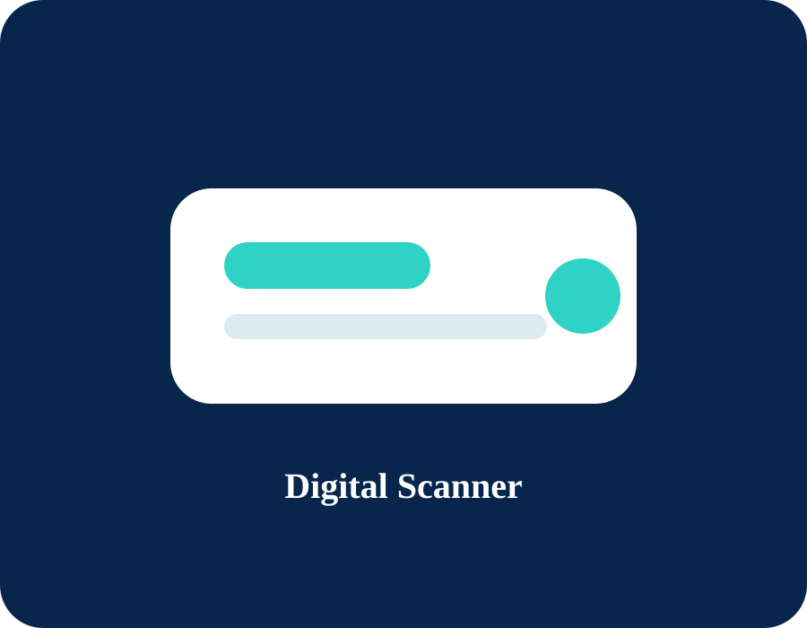

2026년 7월 신규 개원 예정 · 7호선 신풍역 도보 8분
정석적이고 정직한 진료,
오래 믿고 다닐 수 있는 치과
연세대학교 치과대학 출신 보철과 전문의가 임플란트, 틀니, 심미보철, 미백 진료까지 환자에게 필요한 치료를 차분하고 체계적으로 제안합니다.
- 위치
- 신풍역 도보 8분
- 진료 철학
- 정석적이고 정직한 진료
- 대표원장
- 이현호 보철과 전문의
- 주요 진료
- 임플란트 · 틀니 · 심미

Clinic Philosophy
처음 만나는 치과일수록, 더 충분히 설명하겠습니다.
연세세브란스치과는 단순히 치료를 많이 권하는 치과가 아니라, 환자의 구강 상태와 생활 패턴을 함께 고려해 오래 사용할 수 있는 치료 계획을 제안하는 치과를 지향합니다.
Doctor
대표원장 이현호
연세대학교 치과대학 출신 보철과 전문의로서, 다년간의 임상 경험을 바탕으로 환자분들께 정석적이고 정직한 진료를 제공하고자 합니다.
- 보철과 전문의 관점의 치료 계획
- 임플란트·틀니·심미보철 중심 진료
- 구강 스캐너 등 디지털 장비 적극 도입 예정

Treatments
주요 진료 과목
1차 오픈에서는 진료과목별 핵심 정보를 제공하고, 개원 후 광고용 상세 랜딩페이지로 확장할 수 있습니다.
임플란트
임플란트는 식립 자체뿐 아니라 최종 보철물의 형태, 교합, 관리 가능성까지 함께 보아야 오래 사용할 수 있습니다.
자세히 보기 → 02틀니·보철
어르신의 구강 상태와 생활 습관을 고려해 편안하게 사용할 수 있는 보철 치료 계획을 제안합니다.
자세히 보기 → 03라미네이트·심미보철
치아 색, 형태, 잇몸 라인, 입술과의 조화를 함께 고려해 자연스러운 인상을 목표로 합니다.
자세히 보기 → 04미백
치아 변색 원인과 기존 보철물 여부를 확인한 뒤 개인에게 맞는 미백 계획을 안내합니다.
자세히 보기 → 05충치·신경치료
작은 충치부터 신경치료까지 필요한 치료 범위를 충분히 설명하고, 치아 보존을 우선으로 접근합니다.
자세히 보기 → 06잇몸치료
잇몸 건강은 모든 치과 치료의 기반입니다. 정기적인 관리와 생활 습관 개선을 함께 안내합니다.
자세히 보기 →Digital System
구강 스캐너 등 디지털 장비 기반의 체계적 진료
최신 디지털 장비를 적극 도입해 진단, 상담, 보철 제작 과정의 정확도와 편의성을 높이는 진료 시스템을 구축할 예정입니다.
Clinic Space
쾌적한 신규 개원 공간
실제 인테리어 사진이 준비되기 전까지는 임시 이미지로 구성하고, 개원 전후 실제 사진으로 교체하는 구조입니다.


Quick Contact
상담이 필요하신가요?
전화, 카카오톡, 온라인 상담 신청으로 편하게 문의하실 수 있습니다.